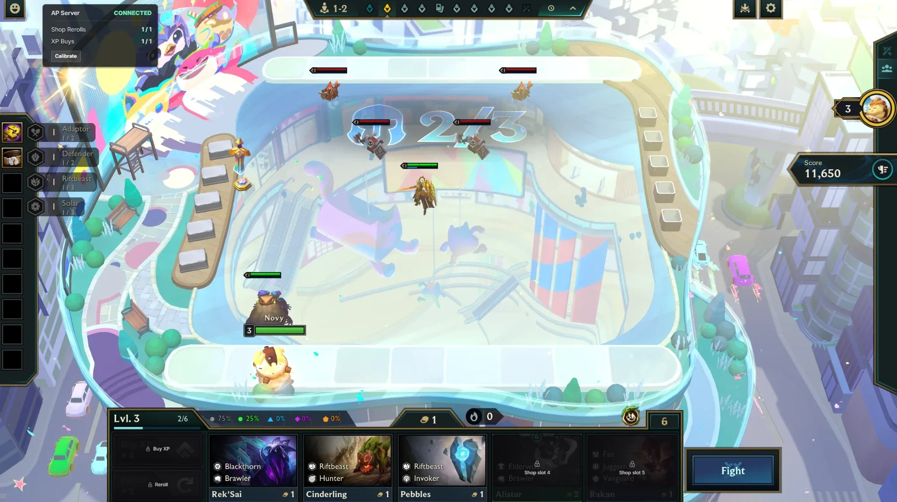
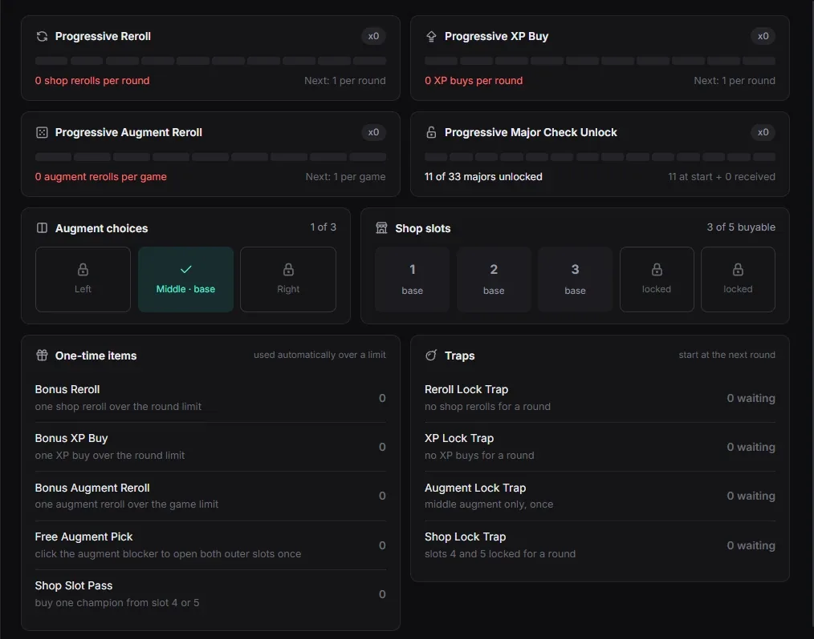
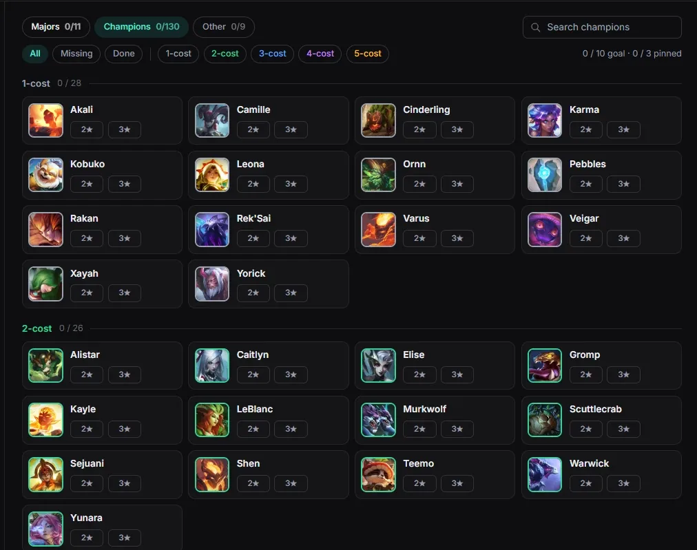

TFT Archipelago
A randomizer for Teamfight Tactics that plugs into Archipelago multiworlds. You start with no rerolls, no XP buys and two locked shop slots; items from other players' worlds unlock them. A Windows app reads the screen and the Riot client, covers locked buttons and checks each board at the end of a match. It never touches the game.

